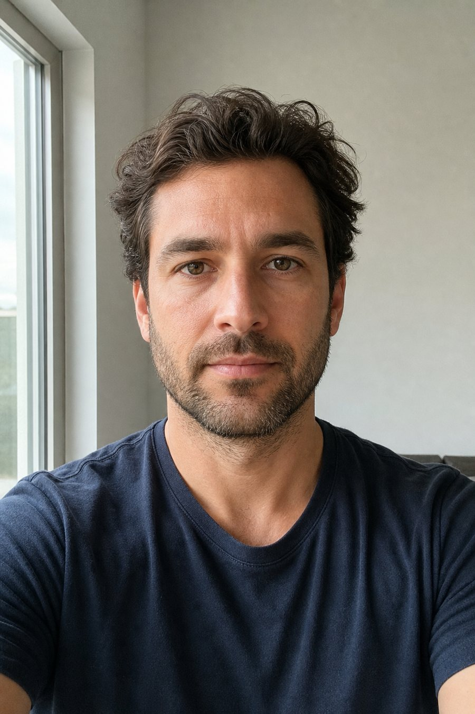

Промтзилла
Как сделать портрет из своего фото с помощью ИИ
Загрузи своё фото онлайн — ИИ или нейросеть превратит его в аккуратный художественный портрет, сохранив лицо, свет и узнаваемые черты.
Пошаговая инструкция
- 1Выбери чёткое фото анфас или три четверти, где лицо хорошо видно.
- 2Открой GPT Image 2 или Nano Banana PRO онлайн и загрузи фото.
- 3Скопируй RU-промт ниже и укажи стиль портрета.
- 4Попроси сохранить сходство, мимику, свет и пропорции лица.
- 5Если стиль слишком сильный, добавь: «сделай портрет ближе к исходному фото».
- 6Проверь, что изменился только художественный стиль, а человек остался узнаваемым.
Пример: до и после

ДоОбычное вертикальное фото с естественным светом.

ПослеНейросеть превращает снимок в художественный портрет без потери сходства.
Промт
RU
Загружаю своё фото. Нужно сделать художественный портрет на основе этого фото онлайн.
Стиль портрета: {{СТИЛЬ_НАПРИМЕР_АКВАРЕЛЬНЫЙ_МАСЛЯНЫЙ_ЖУРНАЛЬНЫЙ_КАРАНДАШНЫЙ}}.
Требования:
— Сохрани узнаваемость человека, форму лица, глаза, нос, губы, волосы и выражение
— Не меняй возраст, пол, черты лица, позу и ракурс
— Преврати фото в красивый портрет с аккуратным светом, фоном и художественной фактурой
— Не делай лицо пластиковым и не превращай человека в другого персонажа
— Результат должен выглядеть как готовый портрет, сделанный нейросетью или ИИ
— Без лишнего текста, водяных знаков, рамок и логотипов
EN
I'm uploading my photo. Create an artistic portrait from this photo online.
Portrait style: {{STYLE_FOR_EXAMPLE_WATERCOLOR_OIL_EDITORIAL_PENCIL}}.
Requirements:
- Preserve the person's identity, face shape, eyes, nose, lips, hair and expression
- Do not change age, gender, facial features, pose or camera angle
- Turn the photo into a beautiful portrait with clean lighting, background and artistic texture
- Do not make the face plastic and do not turn the person into another character
- The result should look like a finished AI/neural-network portrait
- No extra text, watermarks, frames or logos
Теги